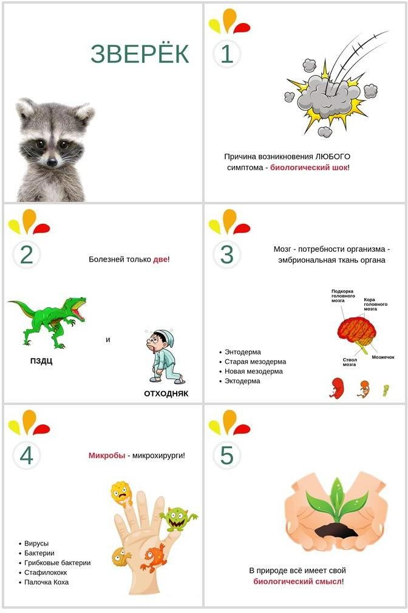
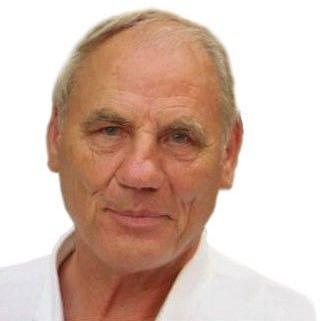
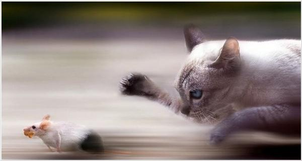
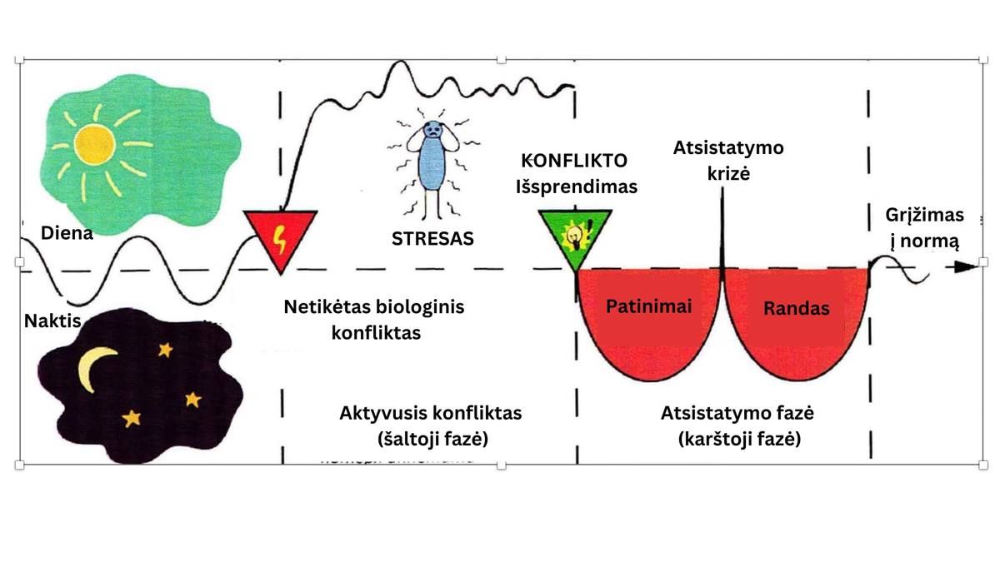
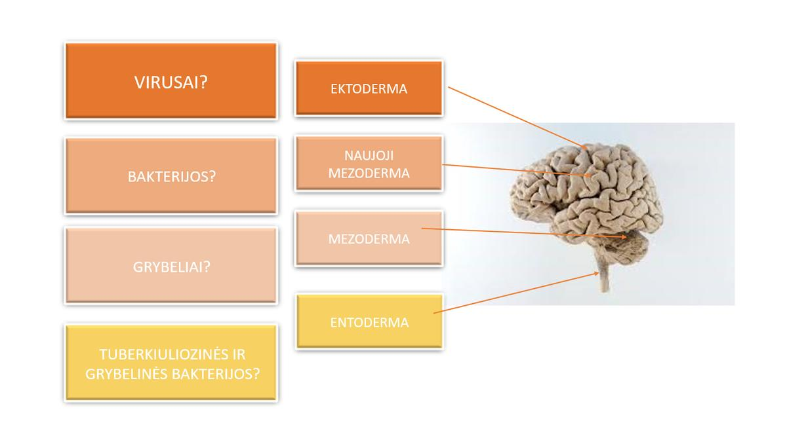

Suprantamas vadovas apie tai, kaip kūnas reaguoja į emocijas — remiantis dr. Ryke Geerd Hamerio 5 biologiniais gamtos dėsniais

Dar pačioje pradžioje, kelyje į psichosomatiką, vienuose mokymuose man atvėrė Hamerio 5 biologinių gamtos dėsnių sistemą — 5BD. Tuomet ir prasidėjo mano kelias į gilesnę psichologiją, diplomines psichologijos studijas.
Psichosomatika — tai šiuolaikinis supratimas, kuriame suformuluotas žmogaus psichikos, pasaulėžiūros, vertybių, įsitikinimų santykis, taip pat išgyventa patirtis su įvairiomis kūno reakcijomis ir ligų psichosomatiniais komponentais.
Kodėl? Blogi specialistai? Ne. Tiesiog ne visi žino 5BD.
Einame pas gydytoją, kad išrašytų receptą. Bet nei gydytojas, nei vaistininkas, nei psichologas nieko nežino apie tave ir tavo gyvenimą. Niekas, išskyrus tave, neišrinks griuvėsių iš tavo galvos.
Anksčiau ar vėliau turėsime susidurti su savo dvasiniu skausmu, nuo kurio bėgame kiekvieną dieną. Klausti ir laukti — reiškia perduoti atsakomybę už savo gyvenimą kitiems.
Čia ir esmė, kad nereikia visko išbandyti. Mes visada ieškome „čia ir dabar" istorijos — jei turime naują simptomą, netyrinėjame vaikystės ir praėjusių gyvenimų. Reikia tik išsiaiškinti savo reakcijas. Tai tavo kūnas — brangiausias.

Gydytojas, tyrinėtojas, penkių vaikų tėvas. Sulaukus 42 metų atsitiko įvykis, kardinaliai pakeitęs jo gyvenimą — jo 18-metis sūnus Dirkas mirė ligoninėje po sunkios traumos. Dėl emocinių išgyvenimų gydytojui buvo diagnozuotas sėklidžių auglys.
Daktaras Hameris pradėjo klausti: kodėl aš? kodėl vėžys? kodėl būtent tas organas? Ir rado atsakymus, kurie pakeitė jo — ir tūkstančių žmonių — supratimą apie ligas.
Jis nustatė, kad kiekvienas jo pacientas, kuriam diagnozuotas sėklidžių ar kiaušidžių vėžys, patyrė skaudžią artimųjų netektį. Ir suformulavo pirmąjį biologinį dėsnį:
Laikui bėgant jis neteko licencijos, tėvynės, laisvės ir žmonos — tačiau nepasidavė ir atskleidė visus 5 biologinius gamtos dėsnius. 2017 m. liepą gydytojas mirė būdamas 82 metų, palikdamas turtingiausią visų laikų palikimą.
Tai, ką jis kažkada vadino GNM, nėra gydymo metodas. Izaokas Niutonas atrado gravitacijos jėgą, bet neteigė, kad obuoliai krinta „pagal jo metodą". Taip pat su 5BD — Hameris atrado gyvų organizmų dėsningumus ir juos sudėjo į sistemą.
Izraelyje kai kurie šviesuoliai priėmė 5BD sistemą, nenurodydami jos kūrėjo. Gydytojas dėl to įsižeidė. Jei būtumėte persekiojami 40 metų, 4 kartus įkalinti ir išvaryti iš tėvynės — ir jums išsivystytų paranoja.
Pas jį kreipdavosi žmonės, kuriems šiuolaikinė medicina nesėkmingai taikė ilgalaikę chemoterapiją. Hameris išsiaiškino, kad auglio augimas nėra piktybinio pobūdžio — kūnas bando rasti išeitį. Tačiau jis neišrado nemirtingumo eliksyro.
Dažnai žmonės, patekę į konfliktinę situaciją, viduje jaučia, kad kažką reikia skubiai keisti. Tačiau jie elgiasi taip, kaip buvo įskiepyta vaikystėje, arba vadovaudamiesi principu „kad kas nors nenutiktų".
Gyvūnai gamtoje veikia vadovaudamiesi instinktais. Stirna, neradusi maisto, toliau jo ieško — nes svarbiausias biologinis poreikis yra išgyventi. Bet niekur nesutiksi stirnos, kuri ima galvoti, ar kaimynai nepasmerks jos sprendimo.
Esame tokie pat biologiniai padarai kaip gyvūnai, mus supantį pasaulį suvokiantys instinktyviu lygmeniu. Pavyzdžiui: asmenines ribas kūne nurodo šlapimo pūslė. Maisto ar lėšų trūkumas gali išprovokuoti biologinį kepenų programos aktyvavimą. Šiandieniniame pasaulyje tiesioginis pavojus mirti iš bado negresia — bet norint prikimšti šaldytuvą, mums reikia pinigų.
Žvėriukas — tai pateikimo būdas apie 5BD. Tikslas yra atitraukti nuo klaidingų interpretacijų ir vadinti daiktus savais vardais. Ne siela, energija ir subtilus planas — o žvėriukas. Kol tu gyvas, jis su tavimi.
Iš esmės Žvėriukas yra mūsų autonominė nervų sistema, atsakinga už:
Bet kokia liga ar įvykis atveda kūną į pusiausvyrą, nes simptomai padeda adaptuotis, kai psichika nespėja arba neturi patirties.
Yra rimtas pavojus gyventi ir niekada nežinoti apie žvėriuko egzistavimą — ir toliau kovoti su vėjo malūnais: artimaisiais, onkologija, antsvoriu, neteisybe, spuogais ir savo emocijomis. Kovodami su jais, mes kovojame su savimi.

Tai atsitinka tada, kai didžiulė katė nori tave suėsti, o tu tuo metu esi maža pelytė. Bėgdamas tavo kūnas sutelkia visas jėgas:
Kūnas persijungia į avarinį režimą. Visos mintys išsijungia ir žmogus virsta biomašina, kuri niekuo nesiskiria nuo gyvūno.
Kai Žvėriukas bijo, netiki savo jėgomis. Tai savotiškas paleidimo pultelis, kuris paleidžia biologinę programą staiga ir trenkia kaip žaibas.
Šokas gali būti įvairaus lygio ir sunkumo. Todėl bet koks atsiradęs simptomas yra prisitaikymo prie vyraujančių sąlygų adaptacinis mechanizmas.
Jei yra simptomas — vadinasi, pabėgai nuo pavojaus. Kai tik biologinis poreikis patenkinamas (net jei jis virtualus), programa pereina į 2-ąją fazę — atsistatymą.
Daktaras Hameris yra žmogus, kuris pirmasis rimtai pagalvojo apie sveikatos sritį klausimo „KODĖL?" kontekste ir moksliniu požiūriu.
Bet kokio simptomo priežastis yra biologinis šokas — kai mes pastringame kokioje nors neigiamoje emocijoje ir nežinome, kaip iš jos išeiti. Mūsų Žvėriukas reaguoja greičiau nei mes.
Vyras pribloškė savo poelgiu — Žvėriukas aktyvuoja programą: meilės poreikis dideliame pavojuje. Arba analizuojate kitų veiksmus ir darote išvadą, kad esate „niekas" — reikalingas kitų pripažinimas.
Išvada: programą paleidžia jau išmoktos reakcijos dėl anksčiau įgytos patirties — ką apie save prisigalvojome arba kas mums buvo perduota.
Mes susergame tada, jei susidūrimo su dinozauru metu buvo šios trys sąlygos:
Jei nėra nors vienos iš šių sąlygų — simptomai nepasireikš.
Antrasis biologinis dėsnis atskleidžia pačios ligos esmę. Daktaras Hameris atrado, kad yra tik du skirtingi vegetacinės nervų sistemos tonusai:
Aktyvumas, įtampa. Bėgame nuo dinozauro. Kūnas mobilizuoja resursus. Šalta, sausa, nemiga, nerimas.
Atsistatymas, atsipalaidavimas. Dinozauras dingo. Kūnas atkuria žalą. Karštis, patinimas, skausmas.

Miokardo infarktas, insultas, epilepsijos priepuolis — tai natūrali organizmo krizė, kai iš aktyvios fazės grįžtama su per mažais resursais.
Trečiasis dėsnis aprašo, kokios programos reikia mūsų gyvūnui, kad pabėgtų nuo dinozauro. Hameris atrado aiškią smegenų ir kūno santykio formulę.
Kurią programą aktyvuoti, nusprendžia Žvėriukas — priklausomai nuo to, koks biologinis poreikis yra pavojuje. Paprastai žmogus yra vaikščiojantis automatizmų rinkinys, matantis pasaulį per savo patirties „akinius".
Pabėgome nuo dinozauro. Kūnas patyrė rimtus ląstelių pokyčius — dabar juos reikia atkurti.
Hamerio diagramoje matome, kad atskira smegenų dalis kontroliuoja įvairių tipų mikrobus. Visi jie ramiai miega mūsų kūno aptvaruose, o kai tik kažkur nutrūksta vamzdis — jie, drąsūs santechnikai ir mikrochirurgai, atvažiuoja taisyti.
Likti vienam. Bet net jei esate vienas, milijonai mažyčių augintinių — mikrobų — taikiai sugyvena su mumis visą laiką.
Penktasis dėsnis sudegina viską, ką anksčiau žinojome apie ligas, kurių priežastimis laikomas paveldimumas, greito vartojimo maistas, vėžinių ląstelių šėlsmas ar patogeniniai virusai.
Kodėl mūsų gyvūnas aktyvuoja biologines programas? Tam, kad:
Tonzilės — noriu gauti savo norimą gabalėlį. Biologinis tikslas: kuo didesni migdolai, daugiau sekreto, tuo lengviau nuryti norimą gabalą.
Mastitas — PIPEC režime reikėjo išskirti daugiau pieno liaukų, kad apsaugotumėte savo lizdą. Atsiranda, kai maitiname vaikus ir galvojame, kad neužteks pieno, arba kai kyla pykčiai namie.
Vaiko vėjaraupiai — odos epidermio uždegimas (PRAGULOS), kai mamos šilumos nepakako PIPEC režime. Labiausiai pasireiškia darželiame amžiuje, kai išsiskyrimo su mama baimė didžiausia.
Bet kuris gyvas žmogus planetoje paklūsta 5 Hamerio dėsniams. Tiesiog anksčiau apie tai nežinojome ir daužėmės galvomis į sieną.
Hamerio kompasas — tai orientyrų žemėlapis, kuriame parodomi visi 5 biologiniai gamtos dėsniai. Hameris įrodė, kad visi kūno ir psichiniai negalavimai pasireiškia vienodai. Nėra jokių kitų simptomų priežasčių, išskyrus biologinį šoką.

Kompasas visada sugrąžins iš keistų minčių ir parodys:
Bet kokių simptomų vystymosi eiga nėra patologinė. Nustokite slopinti simptomus, nekreipdami dėmesio į jų atsiradimo priežastį.